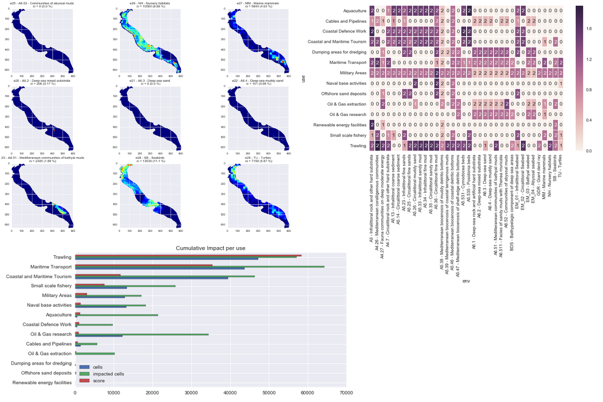

From data to wisdom: informing MSP and EUSAIR implementation in the Adriatic Ionian Region
Alessandro Sarretta, Chiara Venier, Andrea Barbanti, Stefano Menegon, Daniel Depellegrin
(CNR-ISMAR)
Twitter: @Tools4MSP
The role of Marxan in multi-objective Marine Spatial Planning:Building capacity to ADRIATIC+
5 th to 9 th of September, 2016 - Veli Lošinj, Croatia
MSP as a challenge for science-to-policy

Knowledge needed as:
- Conceptual and methodological approaches
- Knowledge of system functioning at different spatial scales and with time
- Data and tools to support decisions
“MSP is a practical way to create and establish a more rational organization of the use of marine space and the interactions between its uses, to balance demands for development with the need to protect marine ecosystems, and to achieve social and economic objectives in an open and planned way.”Ehler and Douvere, 2009
 Why ISMAR is interested and involved in MSP
Why ISMAR is interested and involved in MSP
- ISMAR has multiples science competences:
- Ecology/Biology
- Oceanography
- Modelling
- Geology
- Data management
- "Vertical" in-depth knowledge
- "Horizontal" integration
| PROJECT | TOPIC |
|---|---|
| ADRIPLAN (DG MARE) finished | Transboundary implementation of MSP in AIR |
| RITMARE IV (Italian Ministry of Research and Education funds) ongoing | Development of tools for MSP; MSP for EUSAIR implementation |
| MUSES (H2020 programme CSA) -starting on 1st October 2016 | Multi-use in European Seas |
| BLUEMED CSA (H2020 programme) starting | Research Agenda on Blue Growth-MSP |
| JPI OCEANS JOINT ACTION ongoing | Research Agenda on Blue Growth-MSP |
| SUPREME, SIMWESTMED (call EASME) | Support to MSPD implementation in the Mediterranean Sea |
| PORTODIMARE (Adrion programme) under evaluation | Development of tools for MSP |
| CO-EVOLVE (MED programme) under evaluation | Coastal and maritime tourism |
| MANTIS (DG MARE) ongoing | Sustainable fishery |
| AMARE (Med programme) under evaluation | Marine Protected Areas |
ADRIPLAN project
ADRiatic Ionian maritime spatial PLANning (www.adriplan.eu)- EU funded project to develop MSP in the Adriatic-Ionian Macroregion
- December 2013 - July 2015
- Transboundary (4 countries: Croatia, Italy, Slovenia, Greece), 8 Scientific Partners and 9 Institutional Partners, 17 observers
- Proposals and recommendations for an operational cross-border MSP process
ADRIPLAN methodology
Guideline to be replicated for other MSP case studies in the AIR and Mediterranean area of study, to be adapted at different scale
Main outputs
- Methodological framework
- Initial Assessment for the AIR
- Analysis of coexistence and compatibility among uses, cumulative impacts, socio-economic analysis for the AIR and the two Focus Areas
- Strategic Plan for the Adriatic-Ionian Macroregion
- Portfolio of Actions for the Focus Areas
- Stakeholders involvement
- Interoperable Geospatial Data Portal for MSP and Adriplan Data Policy document
- Tools4MSP (Conflict Scores and Cumulative Impacts)
Open access archived ADRIPLAN reports
- Lipizer, Marina et al.. (2014). ADRIPLAN Data Policy. Zenodo. 10.5281/zenodo.50862
- Barbanti, Andrea et al. (2015). ADRIPLAN Conclusions and Recommendations: A short manual for MSP implementation in the Adriatic-Ionian Region (English edition). Zenodo. 10.5281/zenodo.49190
- Barbanti, Andrea et al.. (2015). Developing a Maritime Spatial Plan for the Adriatic Ionian Region. Zenodo. 10.5281/zenodo.48231
Synthesis map of environmental protection
Strategic zoning for the Adriatic Ionian Region
Pilot action for Focus Area 1
Adriplan Data Portal
- Collecting and making available MSP data in ADRIPLAN
- Tool to be used by partners collaboratively for:
- Discover, view and access available data through metadata
- Create maps merging available data
- Download data to be used in the project
- Populate the data portal with new data
- Incremental implementation during the project
- User (group) profiles to customize interaction and availability of data
- Opensource tools: modular and extensible for development of specific functionalities
Adriplan Data Portal - What's inside
- ~150 vector layers (points, lines,areas)
- ~50 rasters layers (images, models, interpolations)
- ~60 maps (combination of layers)
- Other hundreds of layers through standard OGC-services
- ~60 users
Data portal access and use statistics
Our focus: tools supporting MSP
- Moving from data inventory, to integration within the ADRIPLAN methodology, to supporting tool for MSP planning
- Use, customization, development, integration in the Portal
Types of MSP tools
Identifying spatial interactions between activities
Risk assessment of cumulative effects of human pressures
Decision support systems
Web-based vs. GIS-based tools
Designed for different users (programmer, scientist, strategic planner, case officer, public),
To address different stages of the plan
Tools4MSP
|
“Stefano Menegon et al. 2016. Open source tools to support Integrated Coastal Management and Maritime Spatial Planning. DOI: 10.7287/peerj.preprints.2245v1 |
Tool4MSP - Cumulative impact
Identify areas in the marine space where the environmental components are more exposed to anthropogenic pressures
- Activities and uses (e.g. Maritime transport)
- Environmental components (e.g. Marine mammals)
- Pressures (e.g. Underwater noise)
- Sensitivities: the sensitivity of each environmental component to each pressure generated by a maritime use
firstly introduced by Halpern et al. (2008) at global scale, then implemented in several Marine Regions (Mediterranean by Micheli et al. (2013), Baltic Sea by (Korpinen et al., 2013), and North Sea (Andersen et al., 2013)).
Extended data and visual reports
From data to wisdom: informing MSP and EUSAIR implementation in the Adriatic Ionian Region
by A. Sarretta, C. Venier, A. Barbanti, S. Menegon, D. Depellegrin is licensed under a Creative Commons Attribution 4.0 International License.
It can be viewed online here and downloaded here.
To cite this work please refer to:
“Alessandro Sarretta, Chiara Venier, Andrea Barbanti, Stefano Menegon, Daniel Depellegrin (2016). From data to wisdom: informing MSP and EUSAIR implementation in the Adriatic Ionian Region. DOI: 10.6084/m9.figshare.3806703